A walk through every page of M-VAVE's official V16 firmware for the FM-1, with the real screens. M-VAVE hasn't published a V16 manual, so this was mapped page by page on the firmware itself (Globe page 5 shows Version 016).
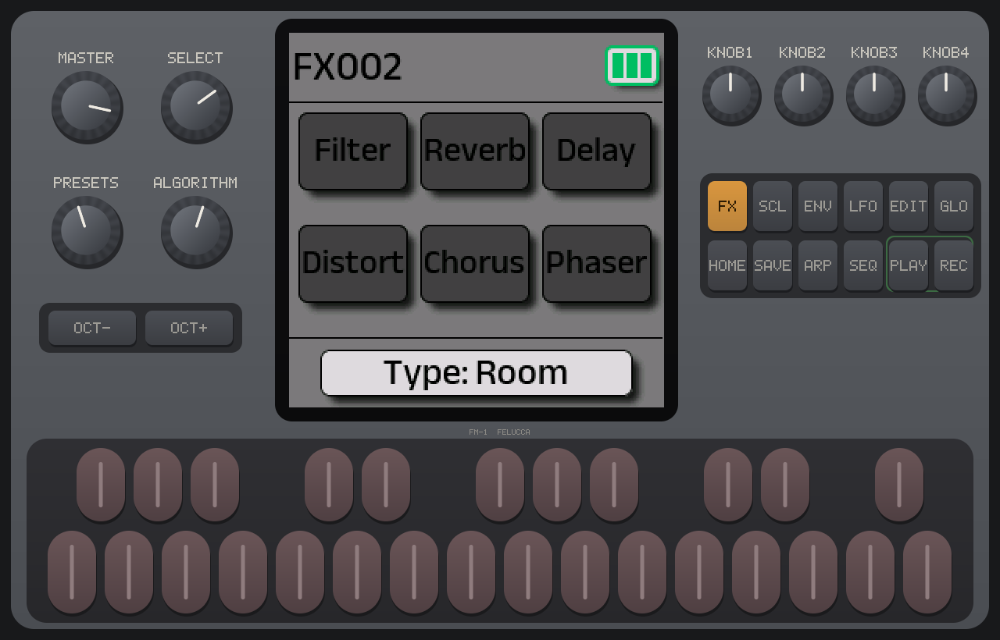
How to read this guide: BUTTON means press a button, KNOB means turn a knob. On every page with four boxes, KNOB 1 to KNOB 4 change the four boxes in the same order (top left, top right, bottom left, bottom right), and SELECT turns the page. The bar at the bottom of the screen says which page you are on, like 2/6.
Press HOME to get back here from anywhere. The top line shows the sound's number and name; the middle is a live waveform (the bar says OSC) that moves while you play. OCT− and OCT+ move the keyboard down or up an octave and show it on screen for a moment.
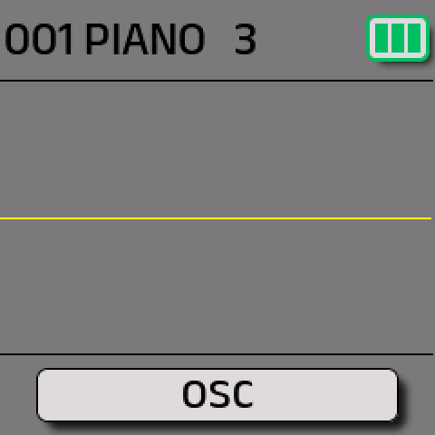
Turn PRESETS on any page and a list of sounds opens over the screen. Keep turning to move through the sounds; the list closes by itself a few seconds after you stop. A * after a name means it has changes you haven't saved.
Across the top of the list are tabs. Turn SELECT while the list is open to move between them. V16 is multitimbral, so on a voice tab (Voice1, V2 …) the bottom row shows that voice's settings for the four knobs: KNOB 1 MIDI channel, KNOB 2 level, KNOB 3 pan, KNOB 4 on/off.
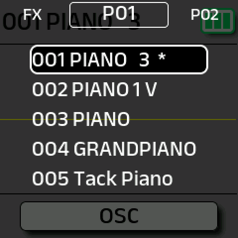
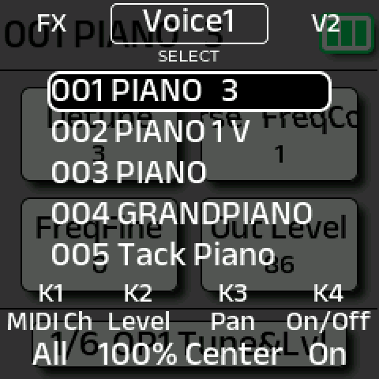
Press FX. The six effects are Filter, Reverb, Delay, Distort, Chorus, Phaser. Turn SELECT to move the red dot from one effect to the next; the bar at the bottom shows its main setting (Reverb Type: Room, Delay Decay, Distort Gain, Chorus and Phaser Freq). Press SEL and the bar says SELECT Move / SEL Done: turn SELECT to move the effect, then press SEL again.
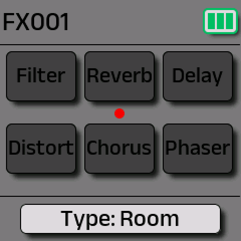
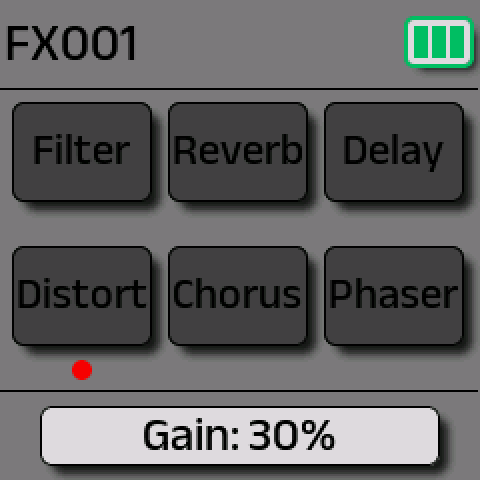
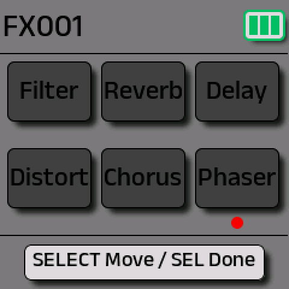
Press ENV for Attack, Decay, Sustain, Release on KNOB 1 to KNOB 4. One page.
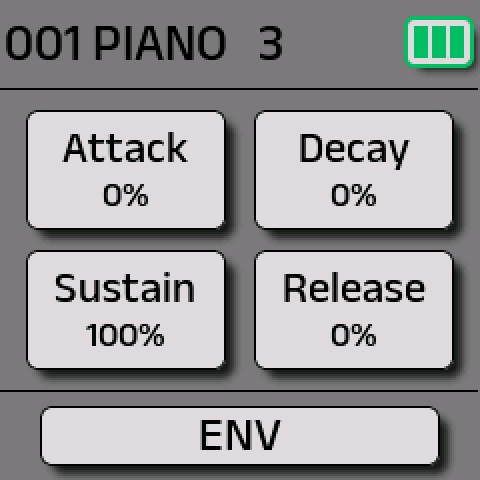
Press LFO. Two pages: Wave, Speed, PMD (pitch depth, vibrato) and AMD (volume depth, tremolo); then Delay, Pitch Sens, LFO Sync, Osc Sync.
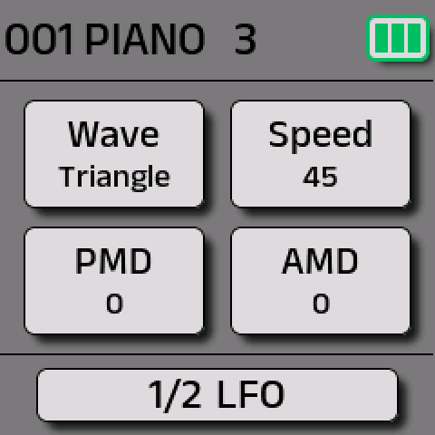
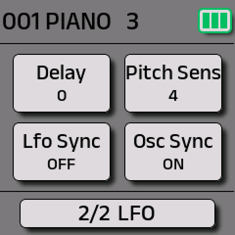
Press EDIT to edit the sound's FM operators. Each operator has six pages; turn SELECT to go through them. Press EDIT again to leave.
Picking the operator is the part people miss: while EDIT is open, the black keys choose what you're editing. They don't play notes on this page, and the octave doesn't matter.
| Page | KNOB 1 | KNOB 2 | KNOB 3 | KNOB 4 |
|---|---|---|---|---|
| 1/6 Tune & Level | Detune | Freq Coarse | Freq Fine | Out Level |
| 2/6 Envelope | Rate 1 | Rate 2 | Rate 3 | Rate 4 |
| 3/6 Envelope | Level 1 | Level 2 | Level 3 | Level 4 |
| 4/6 Sens & Osc | Amp Mod Sens | Velocity | Osc Mode (Ratio / Fixed) | |
| 5/6 Scaling | L Depth | R Depth | Break Point | |
| 6/6 Scaling | L Curve | R Curve | Rate Scale |
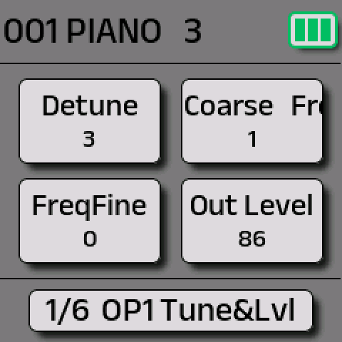
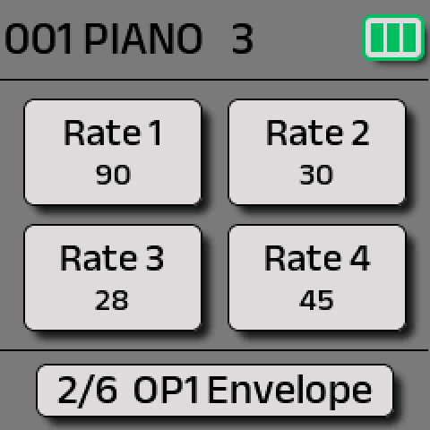
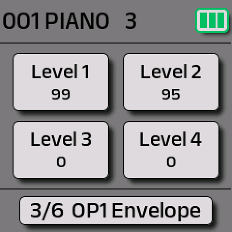
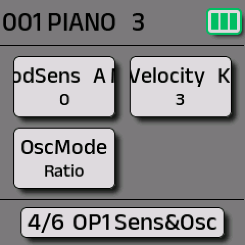
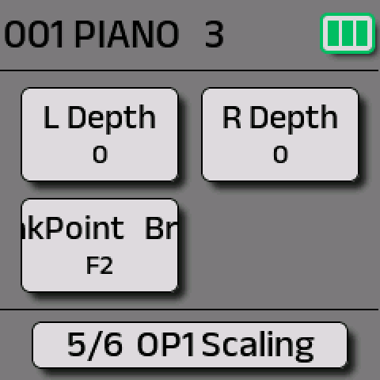
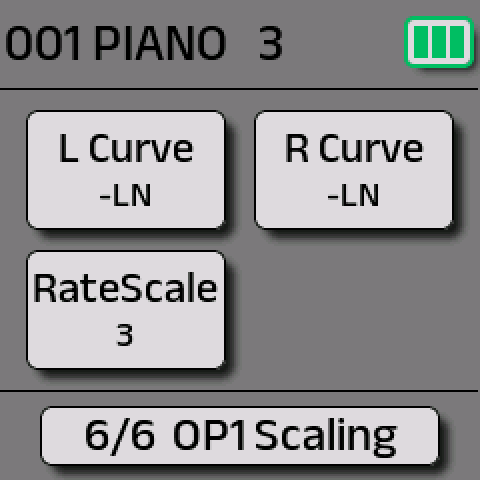
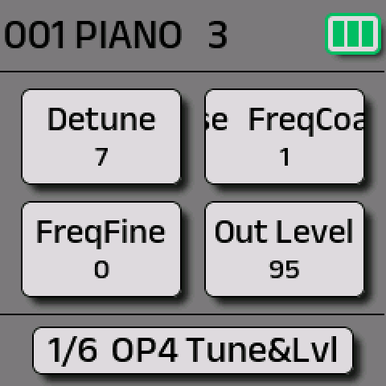
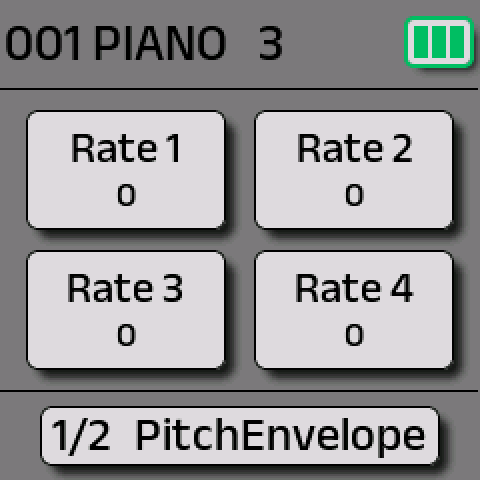
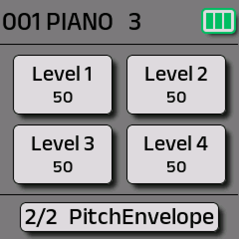
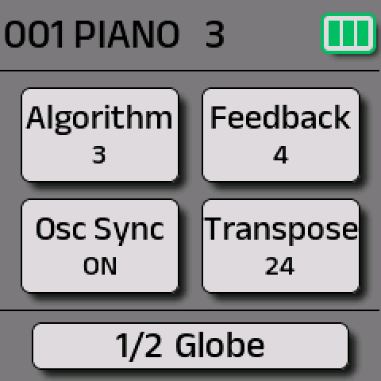
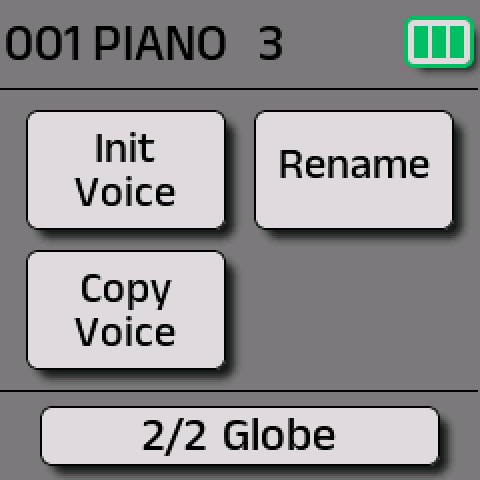
Turn ALGORITHM on any page to change how the six operators connect. A diagram shows the number and the stack: operators feeding into each other, ending at OUT. The box drawn around one operator is its feedback loop. This changes the sound right away, so note the number before you turn it.
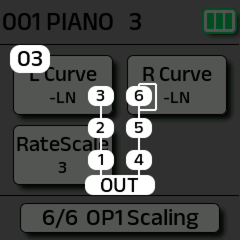
Press GLO. Five pages, called Globe on screen.
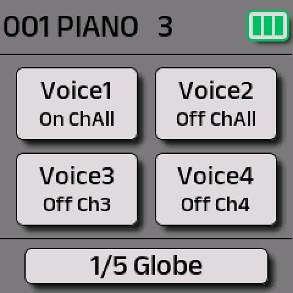
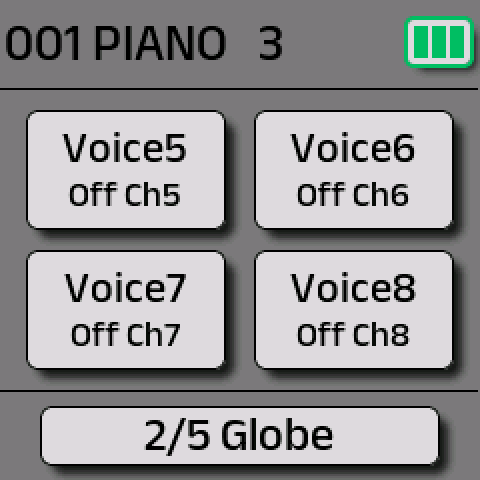
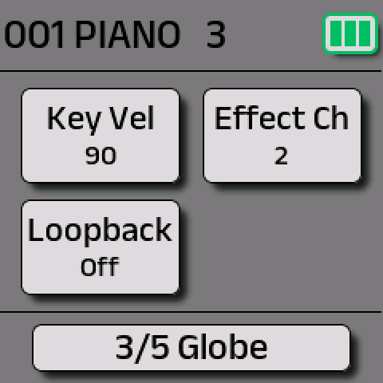
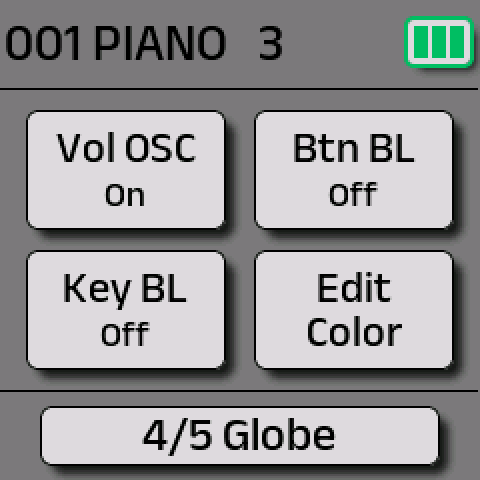
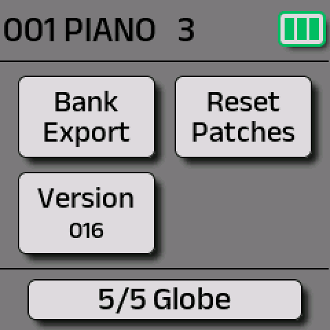
Reset Patches resets the sounds. Export your bank first if you have sounds you want to keep.
Press ARP to turn the arpeggiator on and open its pages; press it again to turn it off. Page 1: pattern (Up …), Octave, Rate, Tempo. Page 2: Gate, Swing, Latch, Sync.
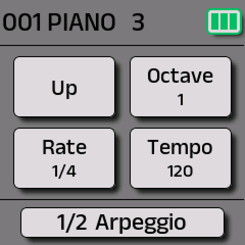
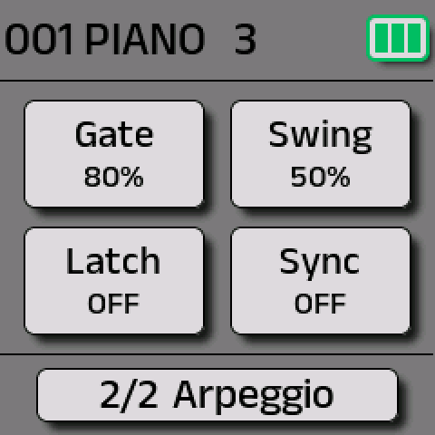
Press SEQ. If the screen says Disable ARP to enter, press ARP to turn the arpeggiator off first; the two can't run together. PLAY starts and stops the pattern (if it says Enable SEQ first, press SEQ). The rows of dots are the steps; the bold one is the playhead.
| Page | KNOB 1 | KNOB 2 | KNOB 3 | KNOB 4 |
|---|---|---|---|---|
| 1/3 | Pattern (P01 …) | Clear | Chain edit | Steps |
| 2/3 | Preset | Rate | Tempo | Gate |
| 3/3 | Swing | Sync | Transpose | Ratchet |
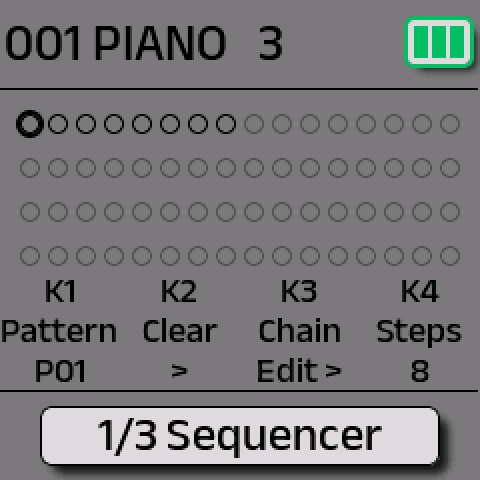
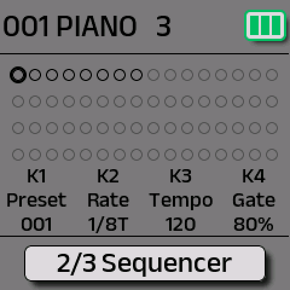
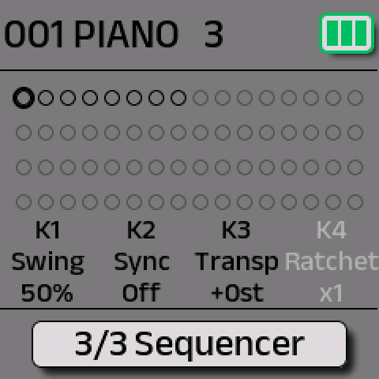
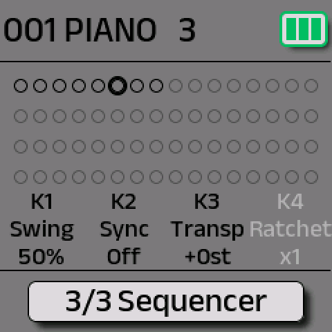
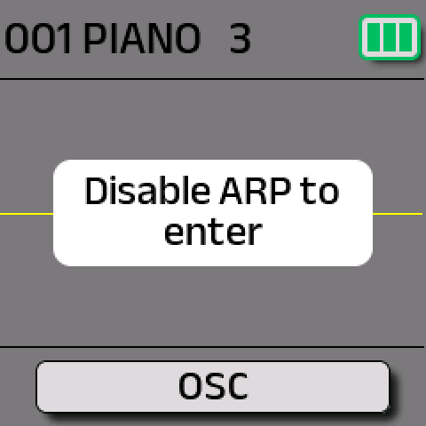
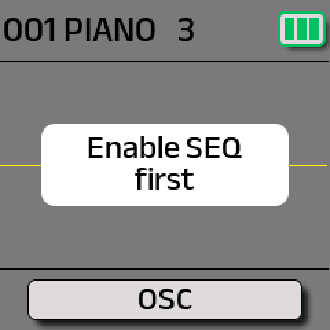
Press SAVE and a menu lists what each knob saves: KNOB 1 ALL, KNOB 2 Globe (the GLO settings), KNOB 3 Preset, KNOB 4 Pattern. Grey lines can't be used at that moment. Press SAVE again to cancel. While this menu is open, the other buttons do nothing, so close it if the FM-1 seems stuck.
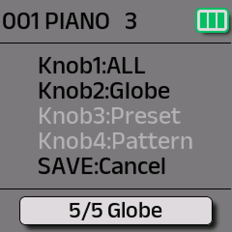